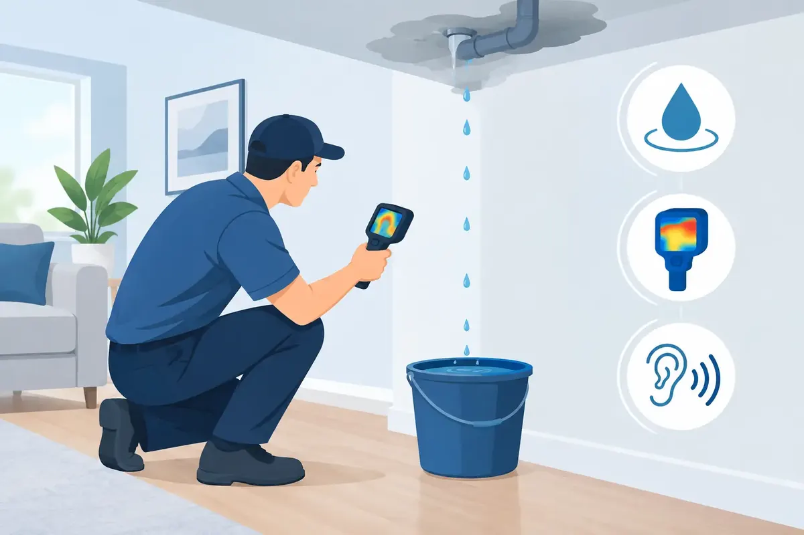

A water leak rarely announces itself with a burst pipe and a flooded floor. More often, it starts with a water bill that creeps up, a soft spot near a cabinet, or the quiet sound of water moving when every fixture is off. Knowing how to locate water leaks early can protect your home, business, belongings, and peace of mind.
The goal is not to take apart every wall or dig up the yard. Start with the clues you can see, hear, and measure. Then know when a hidden leak calls for professional equipment and experienced hands.
How to Locate Water Leaks With the Right First Checks
Before searching room by room, look for signs that water is escaping somewhere it should not. A leak may be inside a fixture, behind a wall, under a slab, in a crawl space, or on the water line between the meter and building.
Watch for these common warning signs:
- A higher-than-normal water bill with no change in household or business usage
- Water stains, peeling paint, warped flooring, or a musty smell
- A toilet that occasionally runs even when no one has flushed it
- Damp soil, unusually green grass, or pooling water near the foundation or water meter
One clue by itself does not always confirm a leak. A high bill can come from irrigation use, guests, or a recently filled pool. Moisture around a shower may be caused by failing caulk rather than a pipe. Still, these signals are worth checking promptly because water damage becomes more expensive the longer it continues.
Use Your Water Meter as a Leak Detector
Your water meter can help tell you whether water is moving through your plumbing when it should not be. Choose a time when no one needs water for at least 30 minutes. Turn off faucets, showers, washing machines, dishwashers, irrigation systems, humidifiers, and ice makers. Do not forget appliances that refill automatically.
Locate the meter, usually near the street or property line. Many meters have a small leak indicator, often a triangle, star, or small dial. If it continues moving while all water use is off, water is likely flowing somewhere on the property.
If there is no visible leak indicator, take a clear photo of the meter reading. Wait 30 minutes to two hours without using water, then compare the reading. A change suggests a leak or an appliance that is still drawing water.
This test does not tell you exactly where the leak is. It does, however, narrow the search. If the meter moves, check fixtures and accessible plumbing first. If you find no indoor cause, the problem may be underground or concealed behind finished surfaces.
Check the Places Where Leaks Start Most Often
Small leaks around fixtures are common, and they can waste a surprising amount of water over time. Work through your property methodically rather than relying on a quick glance.
Start in bathrooms. Open vanity cabinets and inspect the pipes below sinks for drips, corrosion, or dampness. Feel around shutoff valves and supply lines, but do not force old valves that may break. Check the base of toilets for moisture or loose movement. A rocking toilet can damage its wax seal and allow water to escape at the floor.
To test a toilet for an internal leak, add a few drops of food coloring to the tank. Wait about 15 minutes without flushing. If color appears in the bowl, the flapper or another tank component is allowing water through. This type of leak may not leave a puddle, but it can run up a water bill quickly.
In kitchens and laundry rooms, look beneath sinks, around dishwasher connections, behind refrigerators with water lines, and at washing machine hoses. Pay close attention after an appliance has completed a cycle. Some leaks only appear while a drain pump, fill valve, or supply line is under pressure.
Next, inspect the water heater area. Look for moisture at pipe fittings, the temperature and pressure relief valve discharge line, and the base of the tank. A small amount of condensation can be normal in certain conditions, but standing water, rust, or recurring dampness needs attention. With a tankless water heater, inspect visible connections and watch for error codes or drips below the unit.
Do not overlook less obvious areas. Check under sinks in garages, utility rooms, and break rooms. Look at exposed pipes in crawl spaces, basements, and mechanical rooms. In commercial properties, check restrooms, mop sinks, break-room fixtures, water heaters, and equipment connections where a small leak can go unnoticed after business hours.
Look Outside for Underground and Irrigation Leaks
If the meter test suggests a leak but your indoor inspection comes up empty, move outside. Look around hose bibs, exterior faucets, pool equipment, irrigation valves, and the line leading from the meter toward the building.
A wet patch during dry weather, a low spot in the yard, or grass that stays greener than surrounding areas can point to an underground water line leak. You may also hear a faint hissing sound near the meter box or notice water collecting around it. Do not dig around utility lines or try to repair a buried water line without proper assessment.
Irrigation systems deserve their own check. A damaged sprinkler head, cracked valve, or broken underground zone line can waste large amounts of water without creating obvious indoor damage. Run one irrigation zone at a time and walk the property while it operates. Water bubbling from soil, spraying from an unexpected area, or a zone that never seems to shut off indicates a repair is needed.
Know When the Leak Is Hidden
A hidden leak often leaves indirect evidence before it becomes visible. You may notice a warm section of flooring, a persistent musty odor, discolored drywall, bubbling paint, or a room that feels unusually humid. Slab leaks can also create warm spots on a concrete floor when a hot-water line is involved.
Avoid cutting into walls, removing flooring, or breaking concrete based on a guess. Those steps can create unnecessary damage and may still miss the source. Professional leak detection uses tools such as acoustic listening equipment, moisture meters, thermal imaging, and pressure testing to identify the likely location with far less disruption.
Turn off the main water supply and seek urgent help if water is actively flowing, a ceiling is sagging, water is near electrical equipment, or a pipe has burst. If water is near outlets, a panel, or electrical appliances, do not enter standing water. Shut off power only if it can be done safely from a dry location, then contact qualified help.
Protect Your Property While You Wait for Repair
Once you have found the likely area, take practical steps to limit damage. Place a bucket under a slow drip, move furniture and valuables away from wet surfaces, and dry accessible water with towels or a wet-dry vacuum. Open cabinet doors to improve airflow, but do not use heat sources near wet materials or electrical connections.
For a fixture-level leak, the local shutoff valve may stop the water without shutting down the whole property. If that valve is damaged, leaking, or difficult to operate, use the main shutoff instead. Every homeowner, landlord, and facility manager should know where the main valve is located before an emergency occurs.
Regular inspections make leaks easier to catch. Review your water bill monthly, test toilets once or twice a year, replace aging supply hoses, and have visible plumbing checked during routine maintenance. Smart water shutoff valves can also provide added protection by monitoring unusual water use and automatically stopping water in certain situations.
For homeowners and businesses across Middle Tennessee, Angle Stop Plumbing can identify and repair hidden leaks with the respectful, family-friendly service customers deserve. With 31 years of experience, upfront pricing, and 24/7 emergency response, the team is ready when a leak cannot wait.
A small drip is easy to postpone until it becomes a damaged ceiling, ruined flooring, or a costly utility bill. Trust the clues, use the meter test, and ask for help early when the source is not clear. Fast attention is one of the simplest ways to protect the place your family or business depends on.